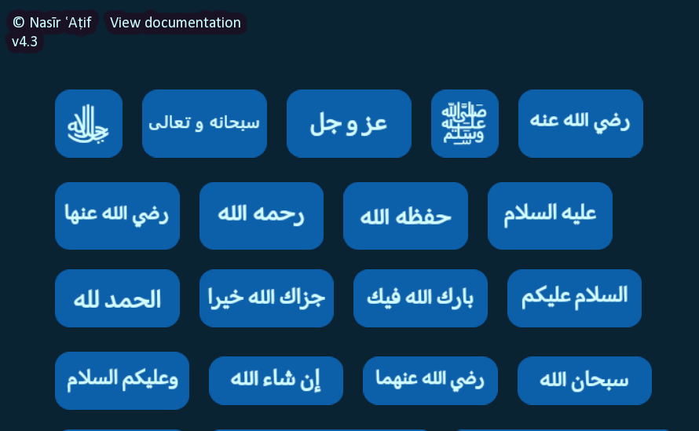
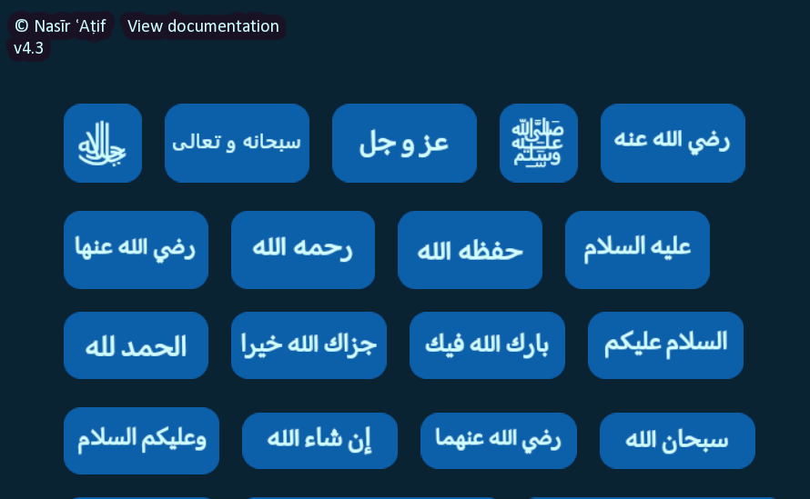

About the Software
Islāmic Text Copier is a simple but very useful PC program that allows you to easily copy islamic expressions in Arabic. You can either click the image of the text to copy it, or use hotkeys such as Alt + 1 for ﷺ, Alt + 2 for ﷻ, etc. This is especially useful when writing articles.
Originally, I made it just for myself to use to make writing articles easier, but decided to publish it as it would be useful for others as well.